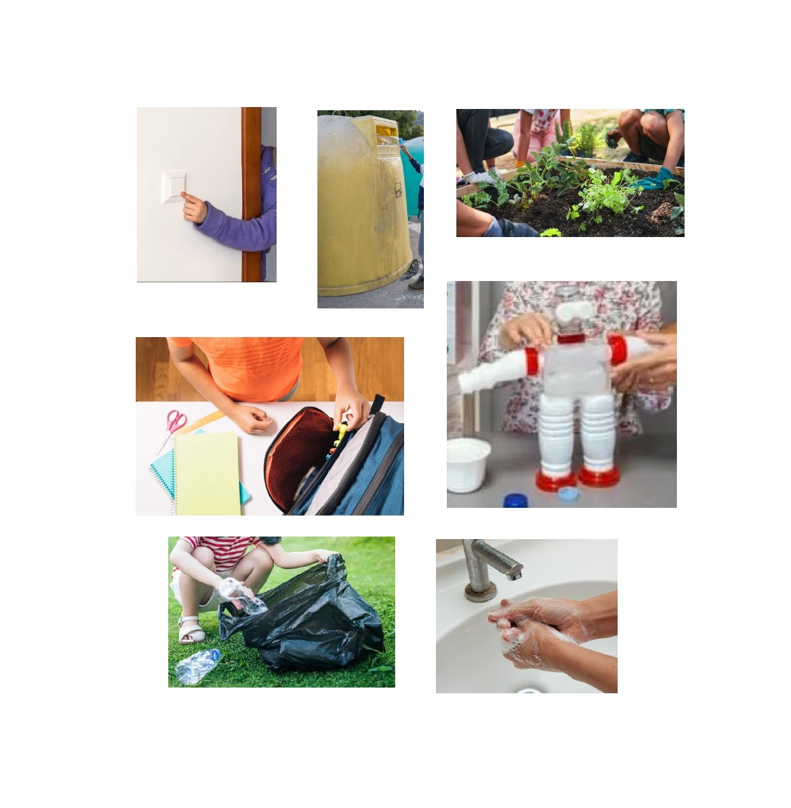

Detectives Guardianes
¡¡Vaya, vaya!! Lo que somos capaces de hacer solitos. Imaginad qué podríamos hacer si nos juntásemos con familiares, amiguitos, vecinos, compañeros del cole...
Coged la lupa, vamos a investigar qué podríamos hacer en el cole por el cuidado del Medioambiente. ¡¡¡Vamos!!!
Elige el nivel de aumento y el tamaño de la lupa. La imagen se verá ampliada al pasar sobre ella con el ratón.

Poniendo orden en las ideas
¡¡Pero cuántas ideas hemos encontrado!!
Vamos a organizarlas bien para que nuestra intervención en el cole sea todo un éxito.
Vamos a ponerle nombre a cada idea.
Relaciona cada tarjeta con su pareja.
¡¡Pero cuántas ideas hemos encontrado!!
\nVamos a organizarlas bien para que nuestra intervención en el cole sea todo un éxito.
\nVamos a ponerle nombre a cada idea.
\nRelaciona cada tarjeta con su pareja.
","showMinimize":false,"itinerary":{"showClue":false,"clueGame":"","percentageClue":40,"showCodeAccess":false,"codeAccess":"","messageCodeAccess":""},"cardsGame":[{"url":"../content/resources/reutiliza.jpg","x":0.5130207456391433,"y":0.5157596982758621,"author":"","alt":"","audio":"","color":"#000000","backcolor":"#ffffff","eText":"","urlBk":"","xBk":0,"yBk":0,"authorBk":"","altBk":"","audioBk":"../content/resources/audio-rec-20260509-215904.webm","colorBk":"#000000","backcolorBk":"#dd6464","eTextBk":"REUTILIZAR"},{"url":"../content/resources/recreo limpio.jpg","x":0,"y":0,"author":"","alt":"","audio":"","color":"#000000","backcolor":"#ffffff","eText":"","urlBk":"","xBk":0,"yBk":0,"authorBk":"","altBk":"","audioBk":"../content/resources/audio-rec-20260509-220313.webm","colorBk":"#000000","backcolorBk":"#bbf1d3","eTextBk":"MANTENER%20LIMPIO%20EL%20RECREO"},{"url":"../content/resources/reciclar.jpg","x":0,"y":0,"author":"","alt":"","audio":"","color":"#000000","backcolor":"#ffffff","eText":"","urlBk":"","xBk":0,"yBk":0,"authorBk":"","altBk":"","audioBk":"../content/resources/audio-rec-20260509-220405.webm","colorBk":"#000000","backcolorBk":"#fff94d","eTextBk":"RECICLAR"},{"url":"../content/resources/huerto.jpg","x":0,"y":0,"author":"","alt":"","audio":"","color":"#000000","backcolor":"#ffffff","eText":"","urlBk":"","xBk":0,"yBk":0,"authorBk":"","altBk":"","audioBk":"../content/resources/audio-rec-20260509-220502.webm","colorBk":"#000000","backcolorBk":"#14b33c","eTextBk":"CUIDAR%20LAS%20PLANTAS%20Y%20ANIMALES"},{"url":"../content/resources/apagar la luz.jpg","x":0,"y":0,"author":"","alt":"","audio":"","color":"#000000","backcolor":"#ffffff","eText":"","urlBk":"","xBk":0,"yBk":0,"authorBk":"","altBk":"","audioBk":"../content/resources/audio-rec-20260509-220545.webm","colorBk":"#000000","backcolorBk":"#aca0a0","eTextBk":"APAGAR%20LA%20LUZ"},{"url":"../content/resources/cuidar material.jpg","x":0,"y":0,"author":"","alt":"","audio":"","color":"#000000","backcolor":"#ffffff","eText":"","urlBk":"","xBk":0,"yBk":0,"authorBk":"","altBk":"","audioBk":"../content/resources/audio-rec-20260509-220610.webm","colorBk":"#000000","backcolorBk":"#8c3adf","eTextBk":"CUIDAR%20EL%20MATERIAL%20ESCOLAR"},{"url":"../content/resources/ahorro agua.jpg","x":0,"y":0,"author":"","alt":"","audio":"","color":"#000000","backcolor":"#ffffff","eText":"","urlBk":"","xBk":0,"yBk":0,"authorBk":"","altBk":"","audioBk":"../content/resources/audio-rec-20260509-220656.webm","colorBk":"#000000","backcolorBk":"#32c5c8","eTextBk":"CERRAR%20EL%20GRIFO%20PARA%20AHORRAR%20AGUA"}],"isScorm":0,"textButtonScorm":"Guardar la puntuación","repeatActivity":true,"weighted":100,"textAfter":"","version":2,"percentajeCards":100,"type":0,"showSolution":true,"timeShowSolution":3,"time":3,"evaluation":false,"evaluationID":"90ee86a1-d437-4c8a-8eae-c29ce3c3d088","id":"idevice-1778356329762-2x0jke1t7","msgs":{"msgSubmit":"Enviar","msgClue":"¡Genial! La pista es:","msgCodeAccess":"Código de acceso","msgPlayStart":"Pulsa aquí para jugar","msgScore":"Puntuación","msgErrors":"Errores","msgHits":"Aciertos","msgMinimize":"Minimizar","msgMaximize":"Maximizar","msgFullScreen":"Pantalla Completa","msgExitFullScreen":"Salir del modo pantalla completa","msgNoImage":"Pregunta sin imágenes","msgEndGameScore":"Comience la partida antes de guardar la puntuación.","msgScoreScorm":"La puntuación no se puede guardar porque esta página no forma parte de un paquete SCORM.","msgOnlySaveScore":"¡Solo puede guardar la puntuación una vez!","msgOnlySave":"Solo puede guardar una vez","msgInformation":"Información","msgYouScore":"Su puntuación","msgAuthor":"Autoría","msgOnlySaveAuto":"Su puntuación se guardará después de cada pregunta. Solo puede jugar una vez.","msgSaveAuto":"Su puntuación se guardará automáticamente después de cada pregunta.","msgSeveralScore":"Puede guardar la puntuación tantas veces como quiera","msgYouLastScore":"La última puntuación guardada es","msgActityComply":"Ya ha realizado esta actividad.","msgPlaySeveralTimes":"Puede realizar esta actividad cuantas veces quiera","msgClose":"Cerrar","msgAudio":"Audio","msgNumQuestions":"Número de tarjetas","msgTryAgain":"Necesitas al menos %s% de respuestas correctas para obtener la información. Inténtalo de nuevo.","msgEndGameM":"Has completado el juego. Tu puntuación es %s.","msgUncompletedActivity":"Actividad no completada","msgSuccessfulActivity":"Actividad superada. Puntuación: %s","msgUnsuccessfulActivity":"Actividad no superada. Puntuación: %s","msgTypeGame":"Relaciona","msgCheck":"Comprobar","msgRestart":"Reiniciar"}}{kind=link}
{kind=link}
{kind=link}
{kind=link}
{kind=link}
{kind=link}
{kind=link}